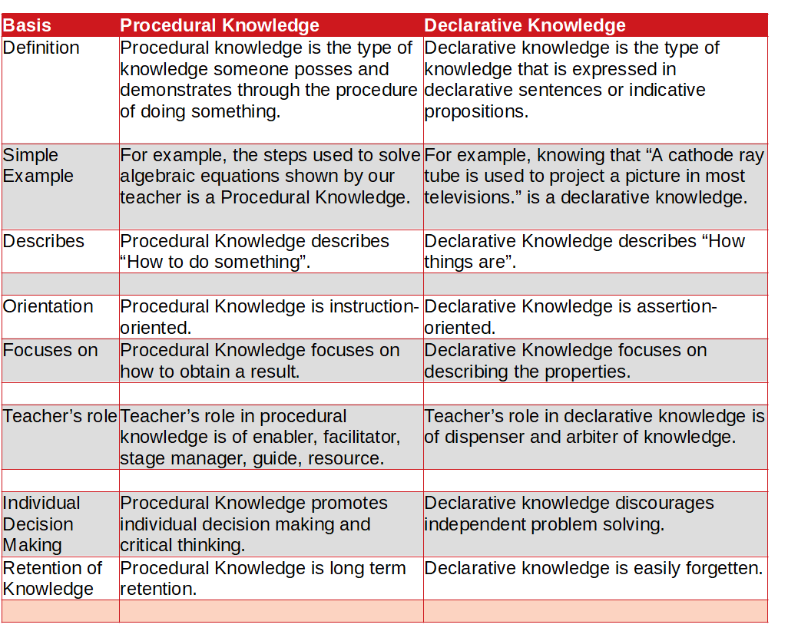

What is the main difference between Procedural Knowledge and Declarative Knowledge?
The main difference between procedural knowledge and declarative knowledge is Procedural knowledge is the type of knowledge someone posses and demonstrates through the procedure of doing something. Declarative knowledge is the type of knowledge that is expressed in declarative sentences or indicative propositions.
| Basis | Procedural Knowledge | Declarative Knowledge |
| Definition | Procedural knowledge is the type of knowledge someone posses and demonstrates through the procedure of doing something. |
Declarative knowledge is the type of knowledge that is expressed in declarative sentences or indicative propositions. |
| Simple Example | For example, the steps used to solve algebraic equations shown by our teacher is a Procedural Knowledge. | For example, knowing that “A cathode ray tube is used to project a picture in most televisions.” is a declarative knowledge. |
| Describes | Procedural Knowledge describes “How to do something”. | Declarative Knowledge describes “How things are”. |
| Orientation | Procedural Knowledge is instruction-oriented. | Declarative Knowledge is assertion-oriented. |
| Focuses on | Procedural Knowledge focuses on how to obtain a result. | Declarative Knowledge focuses on describing the properties. |
| Teacher’s role | Teacher’s role in procedural knowledge is of enabler, facilitator, stage manager, guide, resource. | Teacher’s role in declarative knowledge is of dispenser and arbiter of knowledge. |
| Individual Decision Making | Procedural Knowledge promotes individual decision making and critical thinking. | Declarative knowledge discourages independent problem solving. |
| Retention of Knowledge | Procedural Knowledge is long term retention. | Declarative knowledge is easily forgetten. |
Procedural Knowledge
Procedural knowledge is the type of knowledge someone has and demonstrates through the procedure of doing something. For example, the steps used to solve algebraic equations. Thus procedural knowledge (the knowledge of how, and especially how best, to perform some task), is related to the procedure to carry an action out. Knowledge about “how to do something” is procedural knowledge. It is instruction-oriented. It focuses on how to obtain a result.
Declarative Knowledge
Declarative knowledge is the type of knowledge that is expressed in declarative sentences or indicative propositions. Declarative knowledge is factual knowledge. For example, knowing that “A cathode ray tube is used to project a picture in most televisions.” is a declarative knowledge. When we say things like "I know that the internal angles of a triangle add up to 180 degrees" or "I know that it was you that ate my sandwich", we are claiming to have propositional knowledge. It is also known as descriptive knowledge or propositional knowledge. It is the knowledge which describes how things are. It is assertion 1 -oriented and focuses on describing the properties.